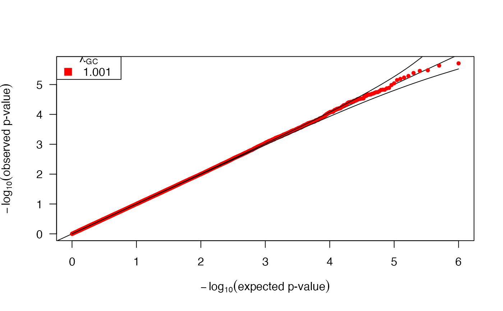

QQ plot
QQ_plot.RdQQ plot and lambda_GC optimized for large datasets.
Arguments
- p_values
vector, matrix or list of p-values
- col
colors corresponding to the number of columns in matrix, or entries in the list
- main
title
- pch
pch
- errors
show 95% confidence interval
- lambda
calculate and show genomic control lambda. Lambda_GC is calcualted using the 'median' method on p-values > p_thresh.
- p_thresh
Lambda_GC is calcualted using the 'median' method on p-values > p_thresh.
- showNames
show column names or list keys in the legend
- ylim
ylim
- xlim
xlim
- plot
make a plot. If FALSE, returns lamda_GC values without making plot
- new
make a new plot. If FALSE, overlays QQ over current plot
- box.lty
box line type
- collapse
combine entries in matrix or list into a single vector
- ...
other arguments
Examples
p = runif(1e6)
QQ_plot(p)

# get lambda_GC values without making plot
lambda = QQ_plot(p, plot=FALSE)